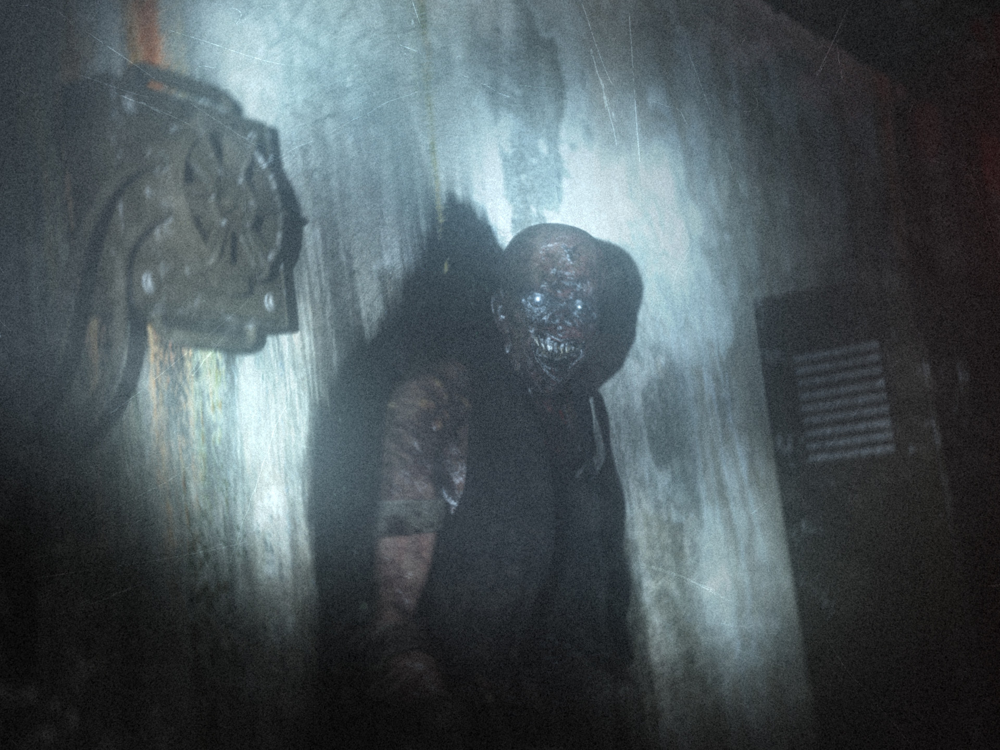
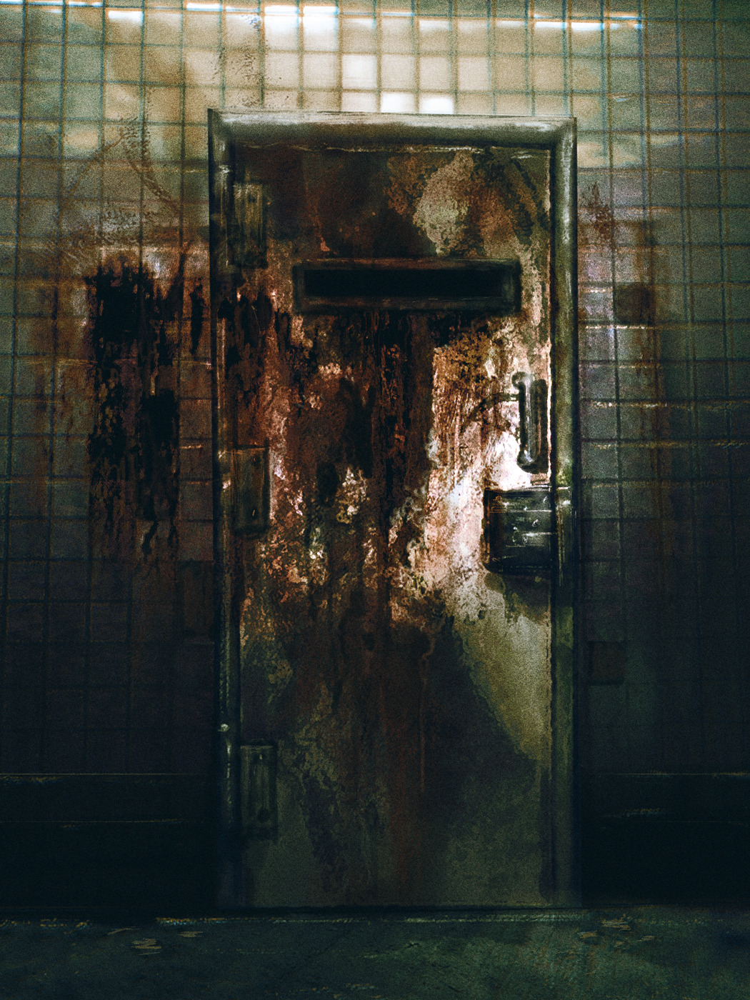

SCP-106, mid-emergence
Item #: SCP-106
Object Class: Keter
Special Containment Procedures:
REVISION 11-8
No physical interaction with SCP-106 is allowed at any time. All physical interaction must be approved by no less than a two-thirds vote from O5-Command. Any such interaction must be undertaken in AR-II maximum security sites, after a general non-essential staff evacuation. All staff (Research, Security, Class D, etc.) are to remain at least sixty meters away from the containment cell at all times, except in the event of breach events.
SCP-106 is to be contained in a sealed container, comprised of lead-lined steel. The container will be sealed within forty layers of identical material, each layer separated by no less than 36cm of empty space. Support struts between layers are to be randomly spaced. Container is to remain suspended no less than 60cm from any surface by ELO-IID electromagnetic supports.
Secondary containment area is to be comprised of sixteen spherical “cells”, each filled with various fluids and a random assembly of surfaces and supports. Secondary containment is to be fitted with light systems, capable of flooding the entire assembly with no less than 80,000 lumens of light instantly with no direct human involvement. Both containment areas are to remain under 24 hour surveillance.
Any corrosion observed on any containment cell surfaces, staff members, or other site locations within two hundred meters of SCP-106 are to be reported to Site Security immediately. Any objects or personnel lost to SCP-106 are to be deemed missing/KIA. No recovery attempts are to be made under any circumstances.
Note: Continued research and observation have shown that, when faced with highly complex/random assemblies of structures, SCP-106 can be “confused”, showing a marked delay on entry and exit from said structure. SCP-106 has also shown an aversion to direct, sudden light. This is not manifested in any form of physical damage, but a rapid exit in to the “pocket dimension” generated on solid surfaces.
These observations, along with those of lead-aversion and liquid confusion, have reduced the general escape incidents by 43%. The “primary” cells have also been effective in recovery incidents requiring Recall Protocol ██ -███ -█. Observation is ongoing.

Corrosion damage on the initial recovery cell. Containment procedures have since been revised.
Description: SCP-106 appears to be an elderly humanoid, with a general appearance of advanced decomposition. This appearance may vary, but the “rotting” quality is observed in all forms. SCP-106 is not exceptionally agile, and will remain motionless for days at a time, waiting for prey. SCP-106 is also capable of scaling any vertical surface and can remain suspended upside down indefinitely. When attacking, SCP-106 will attempt to incapacitate prey by damaging major organs, muscle groups, or tendons, then pull disabled prey into its pocket dimension. SCP-106 appears to prefer human prey items in the 10-25 years of age bracket.
SCP-106 causes a “corrosion” effect in all solid matter it touches, engaging a physical breakdown in materials several seconds after contact. This is observed as rusting, rotting, and cracking of materials, and the creation of a black, mucus-like substance similar to the material coating SCP-106. This effect is particularly detrimental to living tissues, and is assumed to be a “pre-digestion” action. Corrosion continues for six hours after contact, after which the effect appears to “burn out”.
SCP-106 is capable of passing through solid matter, leaving behind a large patch of its corrosive mucus. SCP-106 is able to “vanish” inside solid matter, entering what is assumed to be a form of “pocket dimension”. SCP-106 is then able to exit this dimension from any point connected to the initial entry point (examples: “entering” the inner wall of a room, and “exiting” the outer wall. Entering a wall, and exiting from the ceiling). It is unknown if this is the point of origin for SCP-106, or a simple “lair” created by SCP-106.
Limited observation of this “pocket dimension” has shown it to be comprised mostly of halls and rooms, with [DATA EXPUNGED] entry. This activity can continue for days, with some subjected individuals being released for the express purpose of hunting, recapture, [DATA EXPUNGED].
Addendum:
SCP Review Notes:
Due to the exceedingly difficult-to-contain nature of SCP-106, SCP is to be reviewed every three months or during a post-breach incident. Physical restraints are impossible, and direct physical damage appears to have no effect on SCP-106. Current SCP, as of ██/██/████, revolves around basic observation and immediate response. Previous, more proactive special containment procedures have been recalled due to the events of breaches ██, ███, ██, █, and ████.
Notes on behavior:
SCP-106 appears to go through long periods of “dormancy”, in which it will remain completely motionless for up to three months. The cause for this is unknown; however, it has been shown that this appears to be used as a “lulling” tactic. SCP-106 will emerge from this state in a very agitated state, and will attack and abduct staff and cause gross damage to its containment cell and the site at large. Recall Protocol [DATA EXPUNGED].
SCP-106 appears to hunt and attack based on desire, not hunger. SCP-106 will attack and collect multiple prey items during a hunting behavior event, keeping many “alive” in the pocket dimension for extended periods of time. SCP-106 has no determinable “limit”, and appears to collect a random number of prey items during an event.
The inner dimension accessed by SCP-106 appears to be only accessible by SCP-106. Recording and transmission devices have been shown to still operate inside this dimension, though recordings and transmissions are very degraded. It appears that SCP-106 will “play” with captured prey, and appears to have full control of time, space, and perception inside this dimension. SCP-106 appears [DATA EXPUNGED].
Recall Protocol ██ -███ -█:
In the event of a breach event by SCP-106, a human within the 10-25 years of age bracket will be prepped for recall, with the compromised containment cell being replaced and restored for use. When the cell is ready, the lure subject will be injured, preferably via the breakage of a long bone, such as the femur, or the severing of a major tendon, such as the Achilles Tendon. Lure subject will then be placed in the prepped cell, and the sound emitted by said subject will be transmitted over the site public address system.
Agent █████, after "release" by SCP-106. Subject had been missing for two hours. Subject remained alive for one hour after release.
SCP-106 will typically begin to gravitate toward the lure subject within ten to fifteen minutes after hearing the subject. Should SCP-106 not respond to the initial broadcast, additional physical trauma is to be administered to the lure subject at twenty-minute intervals until SCP-106 responds. Multiple lure subjects may be used in the case of major breach events.
SCP-106 will typically enter a dormant state after finishing with a lure subject. In addition, subjects may [DATA EXPUNGED].